FEATURES AND HOW USE IT
The Point of Sale (POS) system within the application is a robust and intuitive solution designed to streamline sales operations, enhance customer experience, and improve business efficiency. It serves as the central hub for processing transactions, managing sales data, and integrating seamlessly with other business modules such as inventory and reporting.
Home
A centralized dashboard providing quick access to essential data and tools for streamlined operations.
Overview
The Home module serves as the central hub for users, offering an overview of key metrics, shortcuts to frequently used tools, and updates on important tasks or notifications.
Functionality:
- Display key performance indicators (KPIs) such as sales, inventory levels, and employee performance.
- Provide quick access to modules like Inventory, Sales, and Reports.
- Show notifications for pending tasks, updates, or critical alerts.
Use Case Scenarios:
- Monitor daily sales performance and inventory levels at a glance.
- Quickly access frequently used tools to save time and enhance productivity.
- Receive and address critical alerts, such as low stock or overdue tasks, without delay.
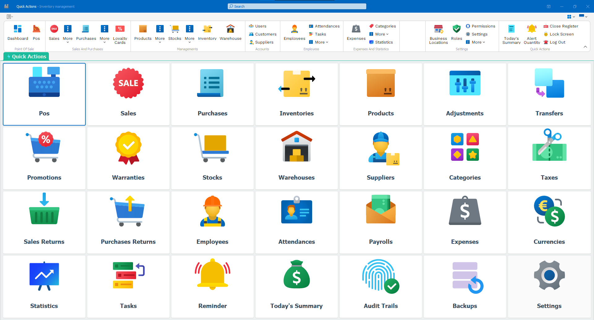
{kind=link}
Point of Sale (POS)
Streamline sales transactions with an efficient and user-friendly point-of-sale system.
Overview
The Point of Sale (POS) module facilitates quick and accurate sales processing, allowing businesses to handle customer transactions efficiently while maintaining accurate inventory and financial records.
Functionality:
- Process sales transactions with support for multiple payment methods.
- Scan barcodes or manually add products to cart for seamless checkout.
- Automatically update inventory levels and generate sales receipts.
Use Case Scenarios:
- Handle customer purchases efficiently in retail stores or restaurants.
- Track real-time sales data for better decision-making and inventory management.
- Provide detailed receipts to customers for transparency and record-keeping.
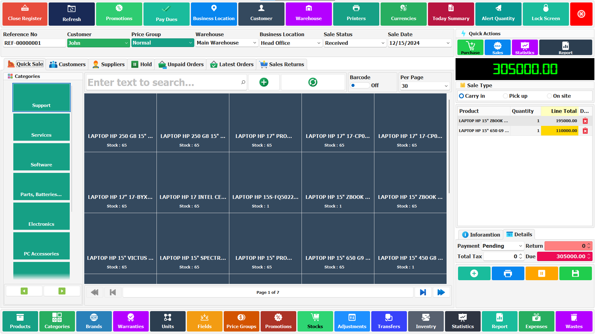
{kind=link}
Audit Trail
A comprehensive tool for tracking and auditing system activities to ensure accountability and transparency.
Overview
Monitor and log system activities and user actions to maintain accountability and ensure compliance.
Functionality:
- Log user actions and system changes in detail.
- Generate customizable reports for audit reviews.
- Set filters to track specific activities or users.
Use Case Scenarios:
- Track changes to critical settings for security purposes.
- Generate audit logs to comply with regulatory requirements.
- Investigate suspicious activities and identify responsible users.
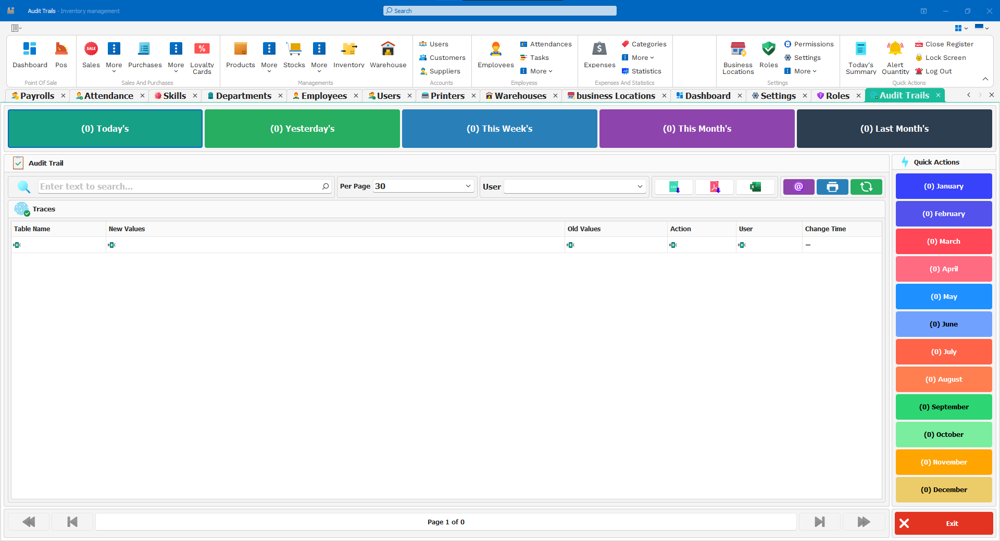
{kind=link}
Authentication
A secure and robust authentication system designed to safeguard access to the platform.
Overview
Ensure secure user access to the system with advanced authentication mechanisms, protecting sensitive data and workflows.
Functionality:
- User login and registration with secure password hashing.
- Multi-factor authentication (MFA) for enhanced security.
- Support for password recovery and account locking.
Use Case Scenarios:
- Allow users to securely log into their accounts from any device.
- Implement multi-layered protection for high-risk accounts.
- Recover access for users who forget their credentials.
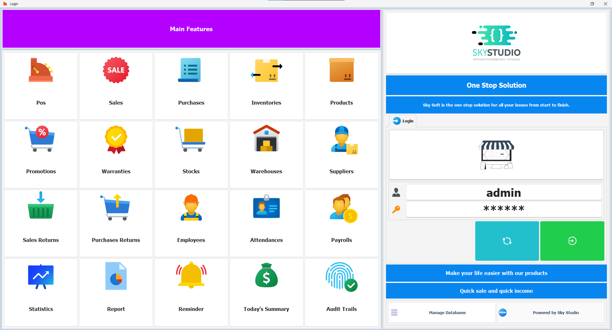
{kind=link}
Role & Permission
Manage user roles and permissions to ensure secure and controlled access to system resources.
Overview
Control user access by defining roles and assigning specific permissions to protect sensitive information and maintain operational integrity.
Functionality:
- Create and manage custom user roles with specific access rights.
- Assign or revoke permissions at a granular level.
- Integrate with audit logs to track changes in roles and permissions.
Use Case Scenarios:
- Restrict sensitive data access to authorized personnel only.
- Define separate roles for administrators, managers, and general users.
- Track permission changes to ensure compliance and accountability.
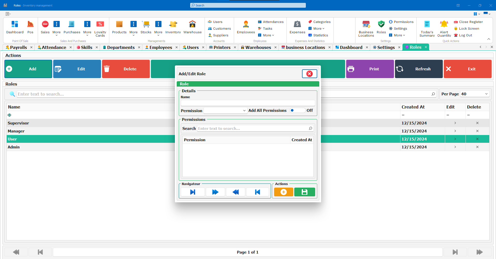
{kind=link}
Settings
Configure and customize system preferences to align with your business requirements.
Overview
Centralize all system configurations to enable seamless customization and flexibility for users and administrators.
Functionality:
- Modify general system settings like timezone, language, and branding.
- Enable or disable specific modules based on business needs.
- Configure notification preferences for emails and alerts.
Use Case Scenarios:
- Update system branding with a custom logo and theme colors.
- Enable specific notification preferences for key updates and alerts.
- Customize module visibility for different user roles.
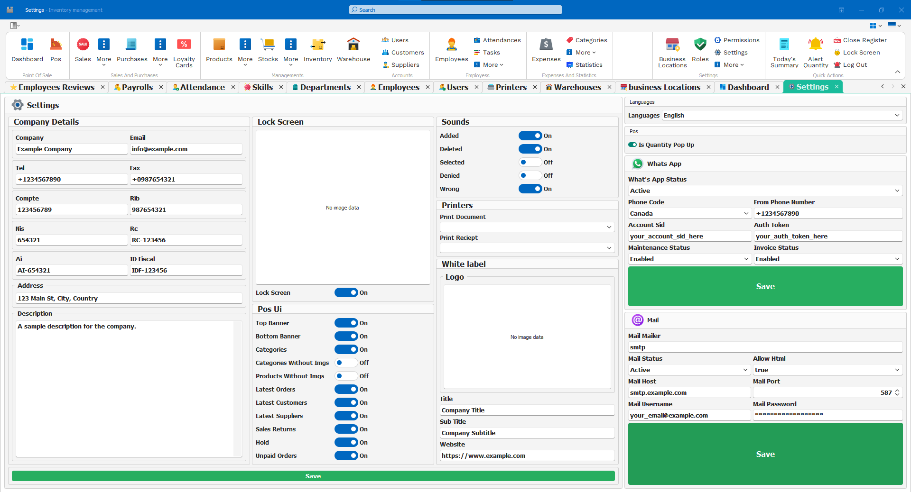
{kind=link}
Dashboard
A central hub for real-time insights and an overview of key business metrics.
Overview
The dashboard provides a comprehensive view of system activities, offering quick access to critical data and performance indicators.
Functionality:
- Display real-time KPIs, graphs, and charts for quick analysis.
- Monitor active processes, pending tasks, and system notifications.
- Provide drill-down capabilities for detailed insights.
Use Case Scenarios:
- Analyze sales performance trends over specific timeframes.
- Track employee attendance and productivity metrics at a glance.
- Identify bottlenecks in processes using real-time data visualizations.
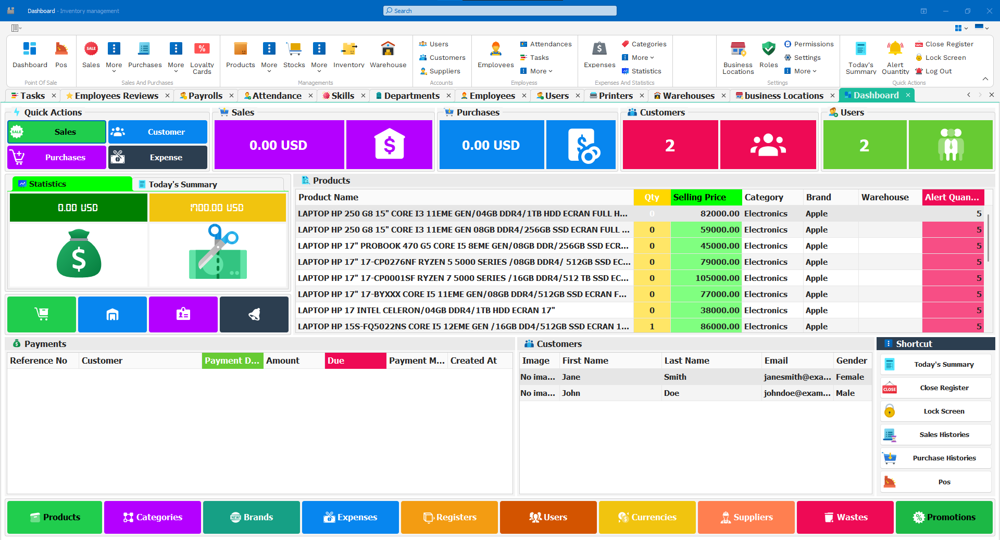
{kind=link}
Business Location
Manage and monitor multiple branches or business locations seamlessly.
Overview
The Business Location module helps in tracking, managing, and analyzing the performance of multiple business branches from a centralized platform.
Functionality:
- Add, edit, and deactivate business locations.
- Track performance metrics for individual branches.
- Assign specific resources and inventory to each location.
Use Case Scenarios:
- Monitor sales performance across multiple stores.
- Allocate staff or inventory to specific locations based on demand.
- Compare operational efficiency across business branches.
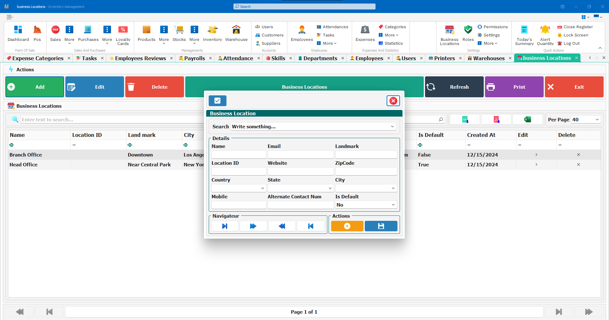
{kind=link}
Warehouse
Efficiently manage inventory and streamline warehouse operations.
Overview
The Warehouse module helps businesses track and manage inventory levels, monitor stock movements, and ensure operational efficiency.
Functionality:
- Add and manage warehouse locations and zones.
- Track stock levels in real-time for accurate inventory management.
- Record stock movements, such as transfers and adjustments.
Use Case Scenarios:
- Monitor stock levels to prevent overstocking or stockouts.
- Allocate products to specific warehouse zones for faster retrieval.
- Track inventory transfers between warehouses or branches.
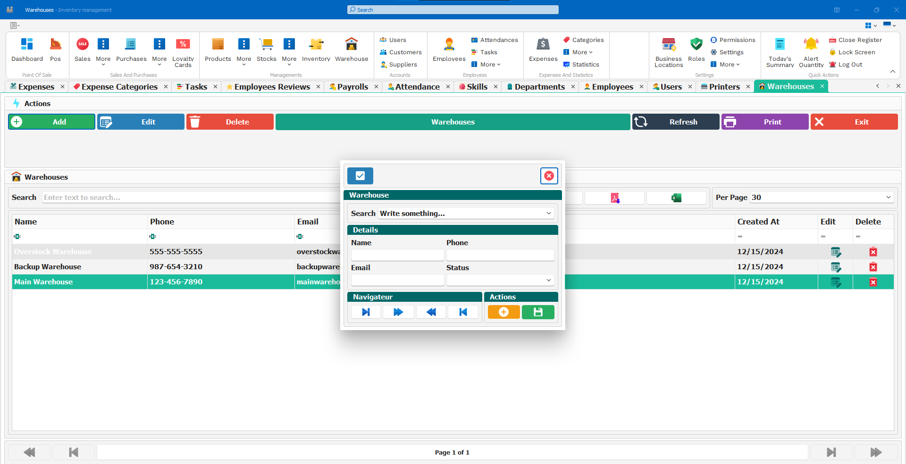
{kind=link}
Printers
Configure and manage printers for seamless document and receipt printing.
Overview
The Printers module simplifies the setup and management of printers to ensure smooth and error-free printing of receipts, reports, and other documents.
Functionality:
- Add and configure multiple printers across locations.
- Assign default printers for specific tasks (e.g., receipts, reports).
- Support for thermal, inkjet, and laser printers.
Use Case Scenarios:
- Print sales receipts directly from the POS system.
- Configure separate printers for invoices and stock reports.
- Integrate kitchen printers for restaurant order management.
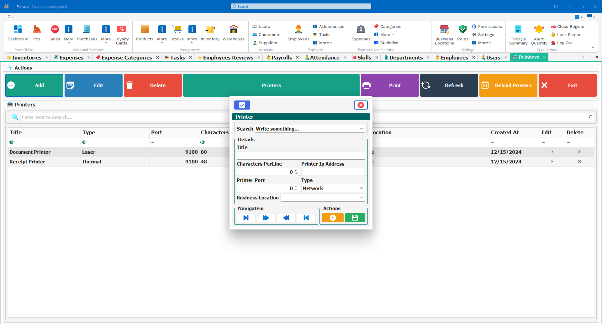
{kind=link}
Users
Manage user profiles and accounts efficiently to maintain a secure and organized system.
Overview
The Users module allows administrators to create, update, and manage user accounts, ensuring proper access and organization within the system.
Functionality:
- Add, update, and deactivate user accounts.
- Assign roles and permissions to individual users.
- View user activity and account status in real-time.
Use Case Scenarios:
- Create user accounts for new employees with appropriate access roles.
- Monitor user activity to ensure accountability and security.
- Deactivate accounts of former employees to protect sensitive data.
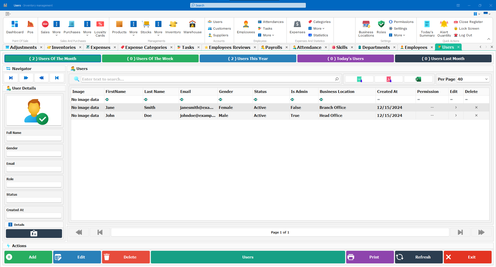
{kind=link}
Employees
Organize and manage employee records efficiently to enhance workforce management.
Overview
The Employees module provides a centralized system to manage employee information, roles, and performance tracking, ensuring streamlined HR operations.
Functionality:
- Store and manage detailed employee records, including personal and professional data.
- Track employee performance, attendance, and job history.
- Enable role assignments and department allocation for better organization.
Use Case Scenarios:
- Maintain an up-to-date directory of employee information for HR reference.
- Track performance metrics to identify high-performing employees.
- Allocate employees to specific departments or projects for effective resource management.
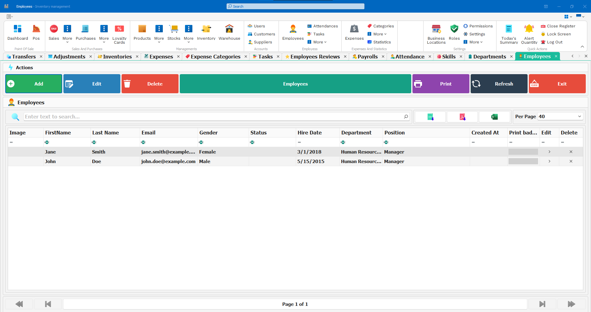
{kind=link}
Departments
Structure and manage organizational departments for efficient workflow and resource allocation.
Overview
The Departments module allows businesses to organize employees into functional units, enabling better resource management and streamlined operations.
Functionality:
- Create and manage organizational departments.
- Assign employees to specific departments based on roles.
- Track department-level performance and resource utilization.
Use Case Scenarios:
- Define clear departmental boundaries for HR, Sales, IT, and other teams.
- Analyze departmental performance to identify areas for improvement.
- Allocate resources effectively by monitoring department workloads.
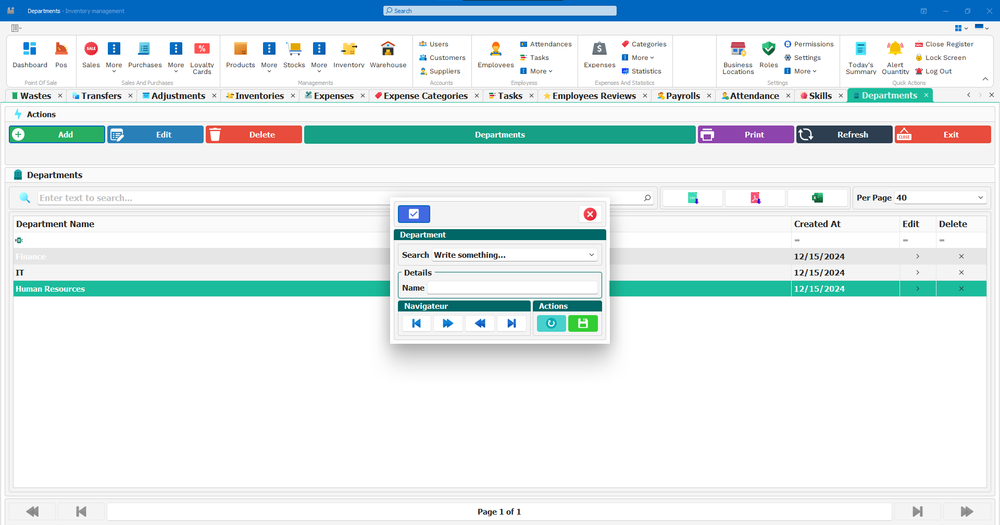
{kind=link}
Positions
Define and manage employee positions to streamline organizational structure and responsibilities.
Overview
The Positions module allows businesses to define job titles, assign responsibilities, and manage employee hierarchy effectively.
Functionality:
- Create, update, and manage job titles within the organization.
- Assign employees to specific positions based on roles and expertise.
- Define reporting hierarchies and position-specific responsibilities.
Use Case Scenarios:
- Standardize job titles across the organization for clarity.
- Assign new hires to appropriate positions based on their roles.
- Track position-specific vacancies and recruit efficiently.
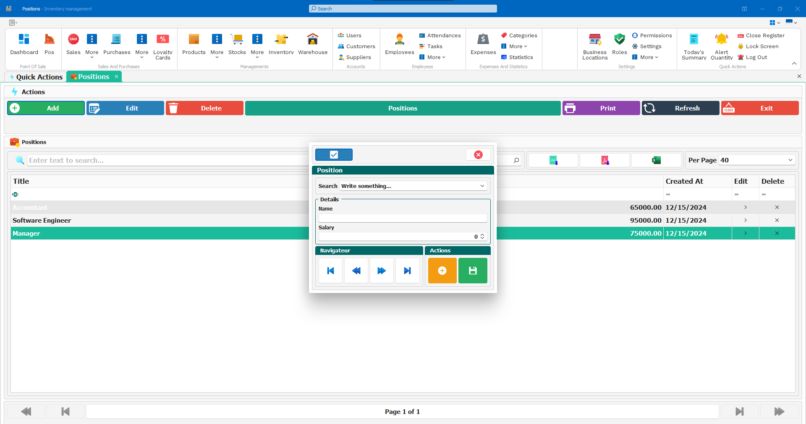
{kind=link}
Skills
Manage and track employee skills to optimize resource allocation and professional development.
Overview
The Skills module helps organizations maintain a comprehensive database of employee skills, certifications, and proficiencies to leverage talent effectively.
Functionality:
- Create and categorize a list of skills relevant to the organization.
- Assign skills and certifications to individual employees.
- Track employee skill development and training history.
Use Case Scenarios:
- Identify employees with specific skills for project assignments.
- Plan training programs to address skill gaps in the workforce.
- Track certifications and renewals for compliance and expertise.
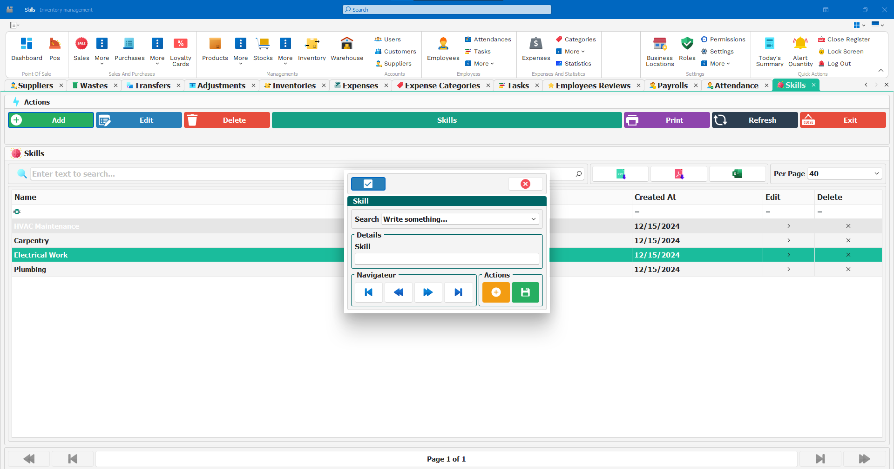
{kind=link}
Attendance
Track and manage employee attendance for efficient timekeeping and workforce management.
Overview
The Attendance module enables businesses to monitor employee attendance, manage working hours, and ensure timely reporting for payroll and performance evaluation.
Functionality:
- Record daily attendance using biometric devices or manual input.
- Track employee check-ins, check-outs, and breaks.
- Generate reports for absenteeism, late arrivals, and overtime.
Use Case Scenarios:
- Monitor employee punctuality and adherence to schedules.
- Calculate overtime for payroll processing.
- Generate attendance reports for HR and management review.
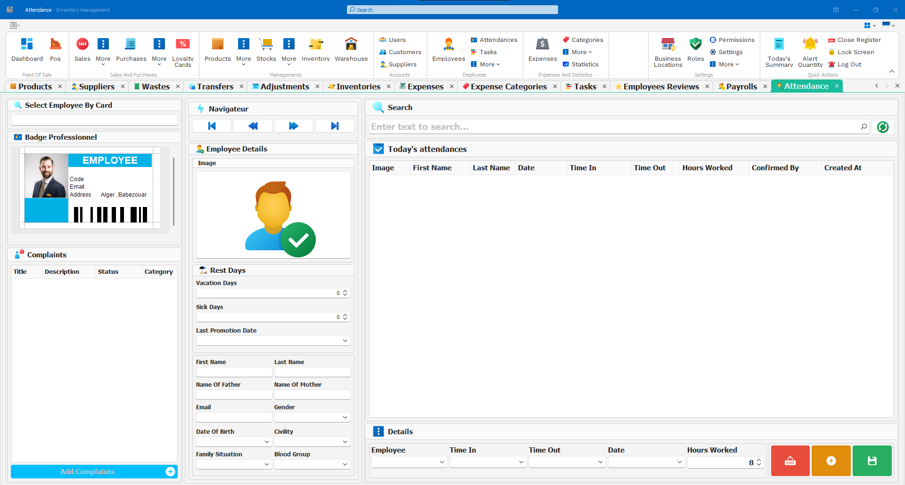
{kind=link}
Payrolls
Streamline salary processing and manage employee compensation effectively.
Overview
The Payrolls module simplifies salary calculations, deductions, and disbursements, ensuring timely and accurate compensation for employees.
Functionality:
- Automate payroll processing based on attendance and performance metrics.
- Manage salary components such as allowances, deductions, and bonuses.
- Generate pay slips and salary reports for employees.
Use Case Scenarios:
- Automate monthly salary disbursement based on attendance data.
- Track overtime and add allowances for extra hours worked.
- Generate detailed salary breakdowns for employee transparency.
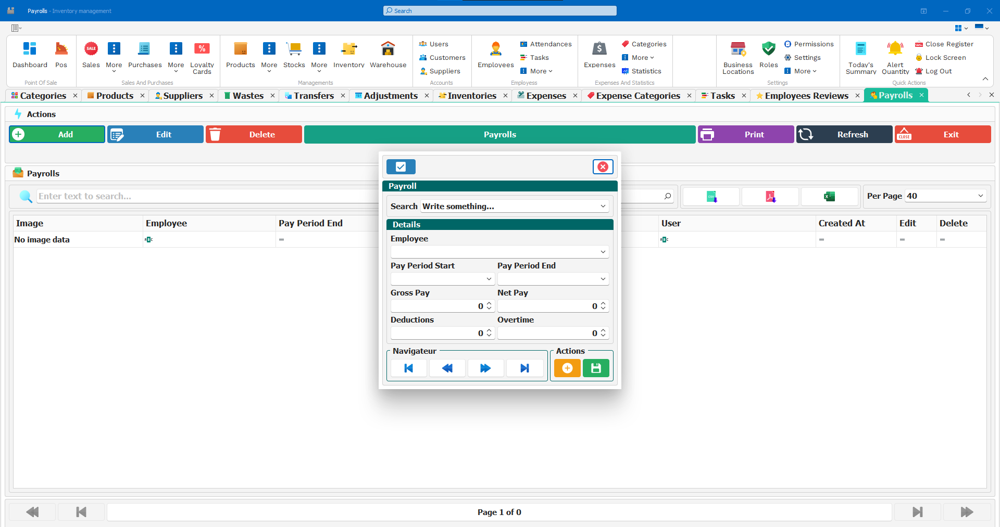
{kind=link}
Employee Reviews
Evaluate and track employee performance to foster growth and improve productivity.
Overview
The Employee Reviews module allows managers to assess employee performance, provide constructive feedback, and identify areas for development, ensuring a productive and motivated workforce.
Functionality:
- Schedule and document regular performance reviews.
- Set and track employee goals and objectives.
- Provide feedback and performance ratings for individual employees.
Use Case Scenarios:
- Evaluate employee performance against set KPIs and targets.
- Identify high-performing employees for rewards or promotions.
- Pinpoint areas requiring improvement and assign appropriate training programs.
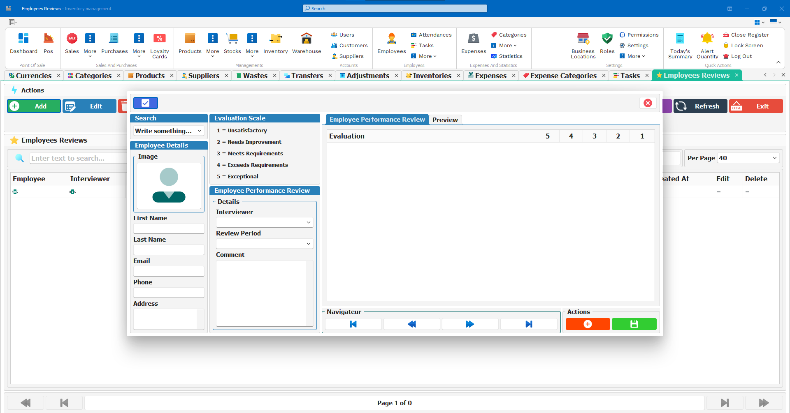
{kind=link}
To-Do List
Organize tasks efficiently and enhance productivity with a simple and effective task management tool.
Overview
The To-Do List module enables users to create, assign, and track tasks, helping teams stay organized and ensuring important deadlines are met.
Functionality:
- Create and prioritize tasks for individuals or teams.
- Set deadlines and reminders to ensure timely completion.
- Track task progress with statuses like "Pending," "In Progress," and "Completed."
Use Case Scenarios:
- Plan daily, weekly, or project-specific tasks for better time management.
- Collaborate with team members by assigning shared tasks and tracking progress.
- Identify overdue tasks and take corrective actions.

Complaints
Manage and resolve complaints effectively to improve customer and employee satisfaction.
Overview
The Complaints module provides a centralized system for recording, tracking, and resolving complaints to enhance service quality and workplace harmony.
Functionality:
- Record complaints from customers or employees with relevant details.
- Assign complaints to responsible teams or individuals for resolution.
- Track the status and resolution progress of complaints in real-time.
Use Case Scenarios:
- Address customer complaints promptly to improve service quality.
- Track and resolve workplace grievances to enhance employee satisfaction.
- Generate reports on common issues to identify areas for improvement.
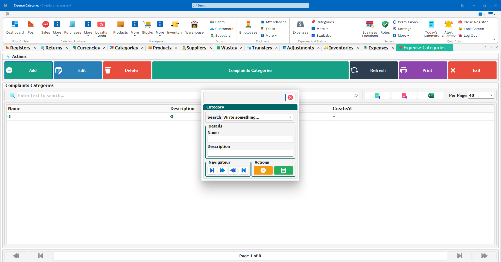
{kind=link}
Expense Tracking
Monitor and manage business expenses effectively to optimize financial performance.
Overview
The Expense Tracking module provides businesses with tools to log, categorize, and analyze expenses, ensuring better financial management and budgeting.
Functionality:
- Log daily, weekly, or monthly expenses with detailed descriptions.
- Categorize expenses for analysis (e.g., utilities, salaries, inventory).
- Generate expense reports to track spending trends and identify cost-saving opportunities.
Use Case Scenarios:
- Monitor operational costs to ensure spending aligns with budgets.
- Track recurring expenses, such as subscriptions and utility bills.
- Identify areas of excessive spending and implement cost-saving strategies.
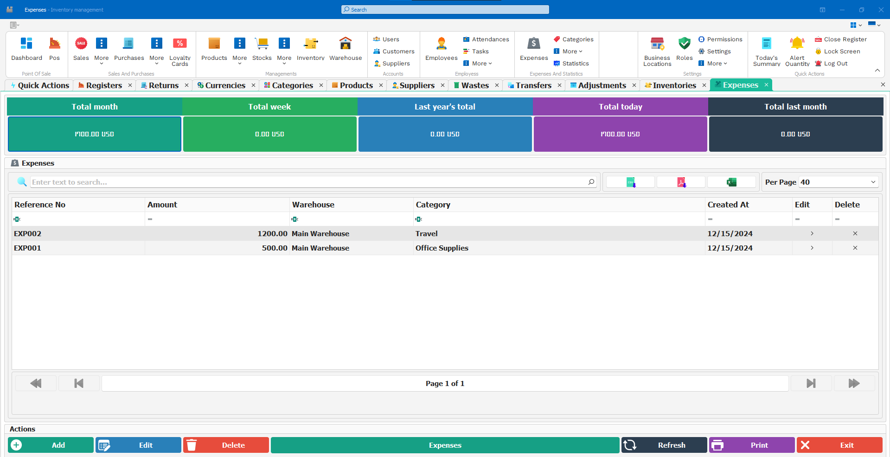
{kind=link}
Statistics
Analyze key metrics and trends to make data-driven business decisions.
Overview
The Statistics module offers powerful insights into business performance through visualizations and reports, helping to identify growth opportunities and potential issues.
Functionality:
- Display key performance indicators (KPIs) in an interactive format.
- Provide detailed analytics on sales, expenses, attendance, and more.
- Generate visual reports like charts, graphs, and tables for easier interpretation.
Use Case Scenarios:
- Track sales performance across different periods and locations.
- Analyze expense trends to identify cost-cutting opportunities.
- Monitor employee attendance statistics to improve workforce planning.

Reports
Generate detailed and customizable reports for better business insights and decision-making.
Overview
The Reports module empowers businesses with the ability to create comprehensive reports that provide actionable insights into various aspects of operations.
Functionality:
- Generate reports on sales, expenses, employee performance, and more.
- Customize report templates to meet specific business requirements.
- Export reports in multiple formats, including PDF, Excel, and CSV.
Use Case Scenarios:
- Create sales reports to evaluate performance across locations.
- Generate expense reports to monitor spending and identify inefficiencies.
- Analyze employee performance data to make informed HR decisions.
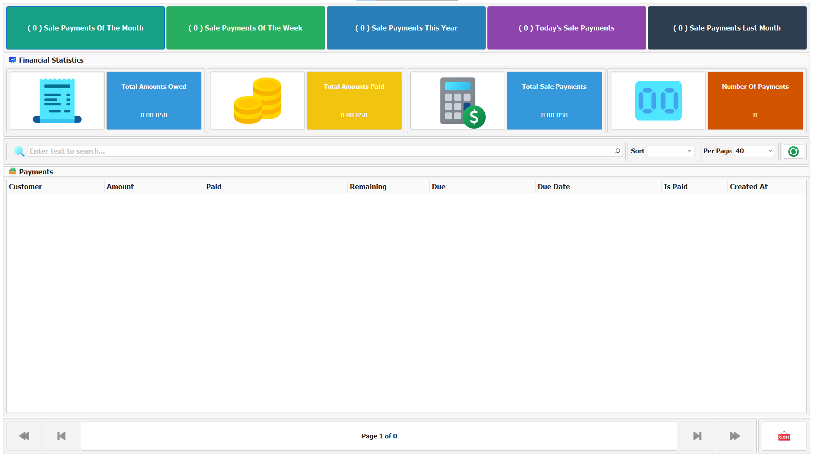
{kind=link}
Inventory
Track and manage inventory levels to ensure seamless operations and prevent stockouts or overstocking.
Overview
The Inventory module provides tools for businesses to monitor stock levels, track product movements, and ensure accurate inventory records for optimal supply chain management.
Functionality:
- Add and categorize products with detailed information.
- Track stock levels in real time to avoid overstocking or shortages.
- Monitor stock movements, including incoming deliveries and outgoing sales.
Use Case Scenarios:
- Monitor real-time stock availability to fulfill customer orders efficiently.
- Track inventory movements to reconcile discrepancies during audits.
- Identify slow-moving or obsolete items to optimize inventory turnover.
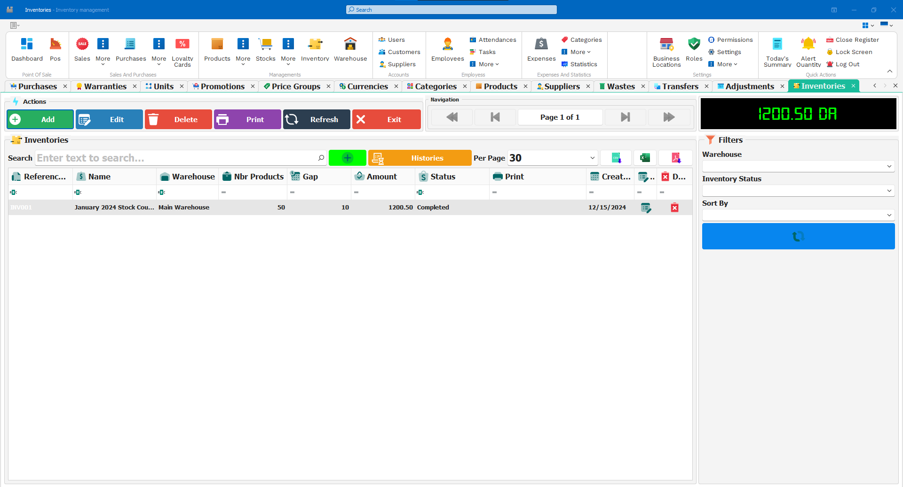
{kind=link}
Stock Adjustment
Adjust inventory levels to reflect accurate stock counts and account for discrepancies.
Overview
The Stock Adjustment module allows businesses to correct inventory discrepancies caused by losses, damages, or manual errors, ensuring accurate stock records.
Functionality:
- Manually adjust stock levels for specific products or categories.
- Track reasons for adjustments, such as damages, theft, or audits.
- Generate reports to analyze frequent stock discrepancies.
Use Case Scenarios:
- Reconcile stock levels after a physical inventory count.
- Account for damaged or expired items during audits.
- Track and investigate repeated stock discrepancies for improvement.
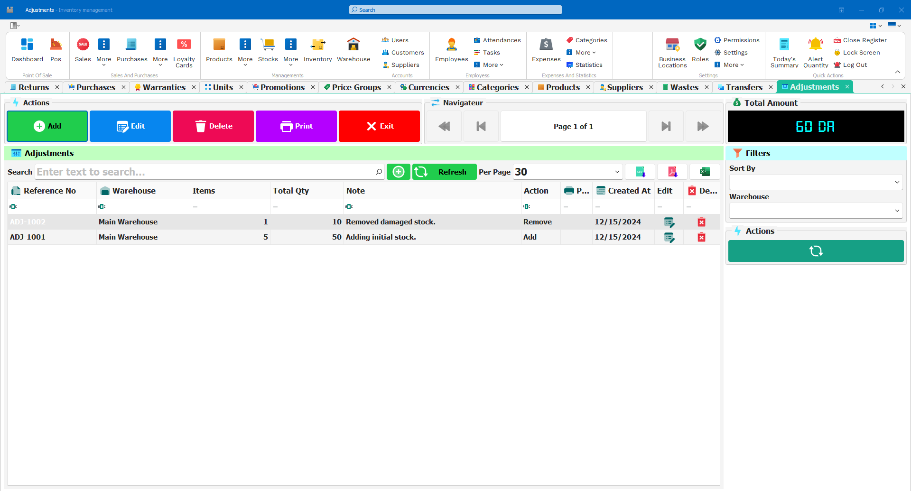
{kind=link}
Stock Transfers
Manage and track inventory movement between different locations or warehouses.
Overview
The Stock Transfers module enables businesses to seamlessly transfer inventory between warehouses, stores, or branches while maintaining accurate records of stock movement.
Functionality:
- Initiate and track stock transfers between multiple locations.
- Generate transfer orders with detailed product information.
- Monitor transfer statuses such as "Pending," "In Transit," and "Completed."
Use Case Scenarios:
- Distribute inventory evenly across stores to meet customer demand.
- Reallocate stock from overstocked locations to low-stock branches.
- Track and audit inventory movement to minimize errors and discrepancies.
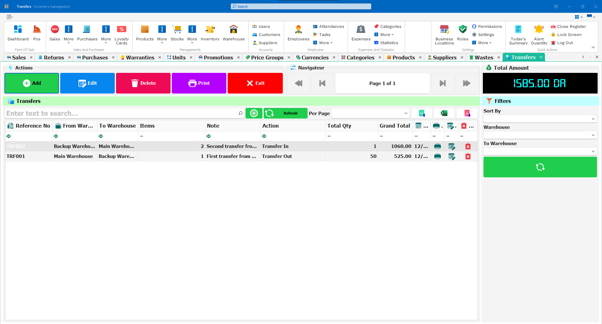
{kind=link}
Wastes
Track and manage inventory waste to minimize losses and improve operational efficiency.
Overview
The Wastes module helps businesses record, categorize, and analyze inventory waste caused by damages, expiry, or other factors to reduce overall losses.
Functionality:
- Log wasted inventory with reasons such as damage, expiry, or theft.
- Generate reports on waste trends to identify common causes.
- Integrate waste data with inventory for accurate stock tracking.
Use Case Scenarios:
- Track expired products and adjust stock levels accordingly.
- Analyze waste trends to identify operational inefficiencies.
- Record and monitor waste to comply with regulatory requirements.
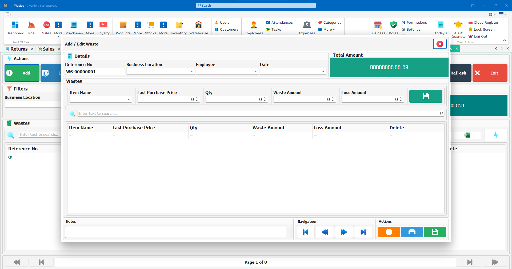
{kind=link}
Suppliers
Manage and maintain supplier relationships to streamline procurement and inventory management.
Overview
The Suppliers module enables businesses to create and manage supplier profiles, track purchase orders, and build efficient supplier relationships for improved procurement processes.
Functionality:
- Add and update supplier profiles with detailed contact information.
- Track purchase orders, deliveries, and payment statuses for each supplier.
- Generate reports to evaluate supplier performance and reliability.
Use Case Scenarios:
- Maintain an up-to-date supplier directory for quick access to contact details.
- Track delivery schedules to ensure timely inventory replenishment.
- Evaluate supplier performance to identify the most reliable partners.
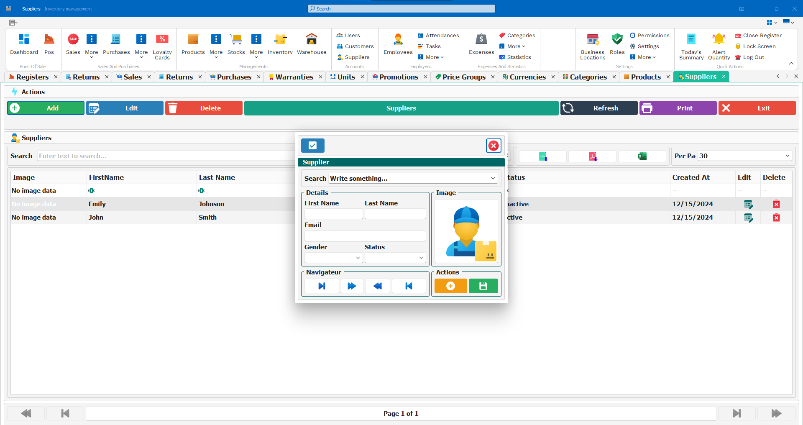
{kind=link}
Products
Organize and manage your product catalog efficiently to streamline sales and inventory operations.
Overview
The Products module enables businesses to create, manage, and organize their product catalog, ensuring accurate information for inventory, sales, and reporting.
Functionality:
- Add and update product details, including name, SKU, price, and description.
- Categorize products for easy search and organization.
- Track stock levels and associate products with suppliers.
Use Case Scenarios:
- Maintain an up-to-date product catalog to avoid errors in inventory or sales.
- Categorize products by department or category for faster retrieval during sales.
- Link products to suppliers to streamline reordering processes.
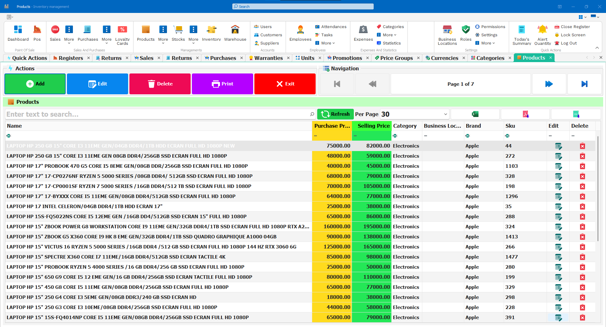
{kind=link}
Categories
Organize products into logical groups to improve inventory management and ease of access.
Overview
The Categories module allows businesses to group products into logical categories, making inventory organization and product searches more efficient.
Functionality:
- Create and manage product categories and subcategories.
- Assign products to relevant categories for easier organization.
- Generate category-specific reports to track inventory or sales performance.
Use Case Scenarios:
- Organize products by department, such as electronics, apparel, or groceries.
- Simplify product searches by grouping similar items together.
- Analyze sales trends for specific categories to optimize inventory stocking.
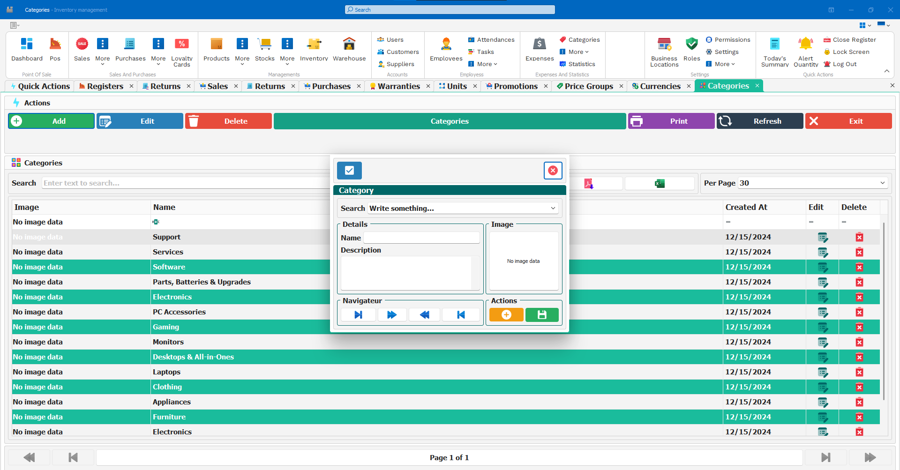
{kind=link}
Currency
Manage multiple currencies to support international transactions and reporting.
Overview
The Currency module enables businesses to handle transactions in multiple currencies, ensuring accurate conversions and supporting global operations.
Functionality:
- Add and manage multiple currencies with their respective exchange rates.
- Automatically update exchange rates or manually adjust them as needed.
- Generate financial reports in various currencies for international clients or stakeholders.
Use Case Scenarios:
- Conduct transactions with international suppliers or customers using their local currency.
- Generate invoices or financial reports in different currencies for global operations.
- Track currency trends to optimize exchange rates for future transactions.
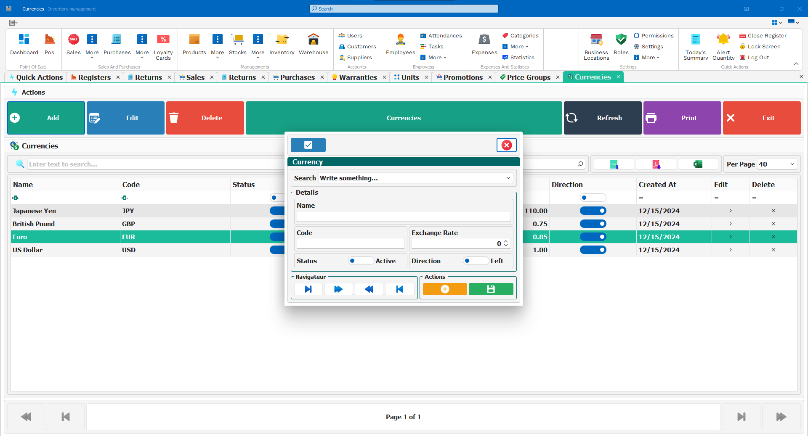
{kind=link}
Price Groups
Create and manage price groups to customize pricing for different customer segments or locations.
Overview
The Price Groups module allows businesses to set customized pricing for various customer groups, regions, or promotional periods, ensuring flexibility in sales and marketing strategies.
Functionality:
- Create multiple price groups based on customer type, location, or sales channels.
- Assign specific products or categories to a price group with unique pricing.
- Generate price group-specific sales reports to evaluate performance.
Use Case Scenarios:
- Offer discounted prices to wholesale customers while maintaining regular prices for retail customers.
- Set regional pricing to reflect currency differences or shipping costs.
- Analyze price group performance to refine promotional strategies and pricing models.
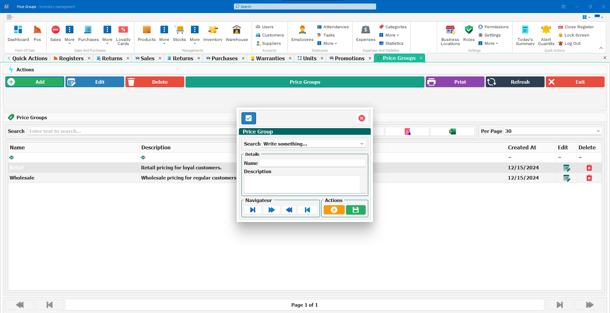
{kind=link}
Promotions
Create and manage promotional campaigns to boost sales and attract more customers.
Overview
The Promotions module enables businesses to design and track marketing campaigns, offering discounts, special pricing, or limited-time deals to enhance customer engagement and drive sales.
Functionality:
- Create and manage promotional campaigns with defined start and end dates.
- Apply percentage or fixed-amount discounts to specific products or categories.
- Track promotion performance with detailed sales and usage reports.
Use Case Scenarios:
- Launch holiday or seasonal sales to increase customer footfall.
- Promote clearance sales to clear out old or overstocked inventory.
- Offer exclusive discounts to loyal customers or members to encourage repeat purchases.
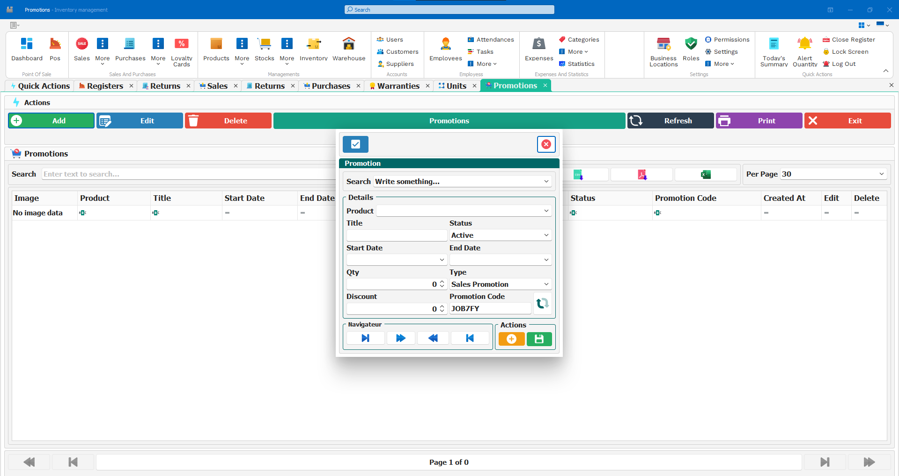
{kind=link}
Measurement Units
Define and manage measurement units to ensure accurate inventory tracking and sales.
Overview
The Measurement Units module allows businesses to standardize product quantities, ensuring consistency in inventory and sales operations across multiple categories.
Functionality:
- Add and manage measurement units such as pieces, kilograms, liters, or custom units.
- Assign measurement units to specific products or categories for standardization.
- Convert units automatically for products sold in multiple quantities or sizes.
Use Case Scenarios:
- Track inventory with standard units such as kilograms for bulk goods or pieces for packaged items.
- Convert bulk product quantities into smaller units for retail sales.
- Ensure consistency in product measurements across inventory and sales reports.
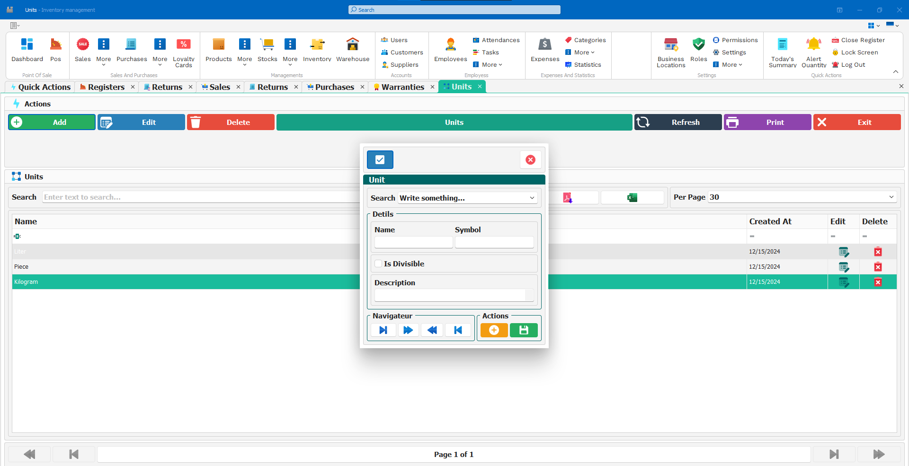
{kind=link}
Warranty
Manage product warranties to ensure customer satisfaction and track after-sales services.
Overview
The Warranty module allows businesses to define and track product warranties, ensuring customers receive reliable after-sales service while maintaining accurate records for warranty claims and replacements.
Functionality:
- Add and manage warranty periods for specific products.
- Track warranty claims, including the date of purchase and claim history.
- Generate reports to analyze warranty claims and identify product reliability trends.
Use Case Scenarios:
- Define warranty periods for electronics or other durable goods.
- Track customer warranty claims to ensure timely replacements or repairs.
- Analyze warranty data to identify common product issues and improve quality control.
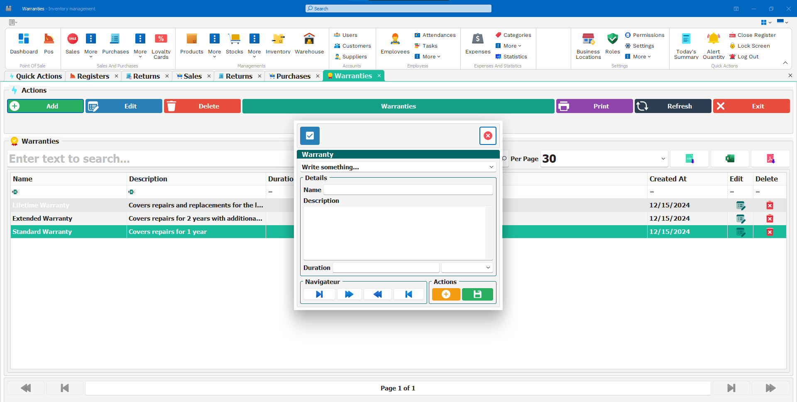
{kind=link}
Purchases
Streamline procurement processes to maintain stock levels and manage supplier relationships efficiently.
Overview
The Purchases module enables businesses to track and manage procurement activities, ensuring timely stock replenishment and fostering strong supplier relationships.
Functionality:
- Create and manage purchase orders with detailed product and supplier information.
- Track order statuses such as "Pending," "In Process," and "Completed."
- Generate procurement reports to analyze purchase trends and supplier performance.
Use Case Scenarios:
- Create purchase orders to restock inventory based on sales trends.
- Monitor supplier delivery timelines to ensure stock availability.
- Analyze procurement costs to identify opportunities for savings.
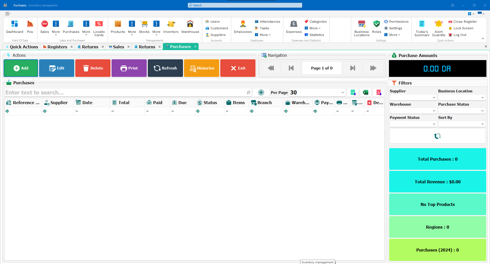
{kind=link}
Purchase Returns
Manage and track returns to suppliers for defective or excess stock to maintain inventory accuracy.
Overview
The Purchase Returns module helps businesses efficiently handle returned items to suppliers, ensuring proper documentation and inventory updates while maintaining supplier relationships.
Functionality:
- Create and manage return orders for defective, damaged, or excess stock.
- Track return statuses such as "Initiated," "In Transit," and "Completed."
- Generate reports to analyze the frequency and causes of purchase returns.
Use Case Scenarios:
- Return defective or damaged goods to suppliers for replacement or refund.
- Handle overstocked inventory by coordinating returns to suppliers.
- Analyze return data to identify suppliers with consistent product quality issues.
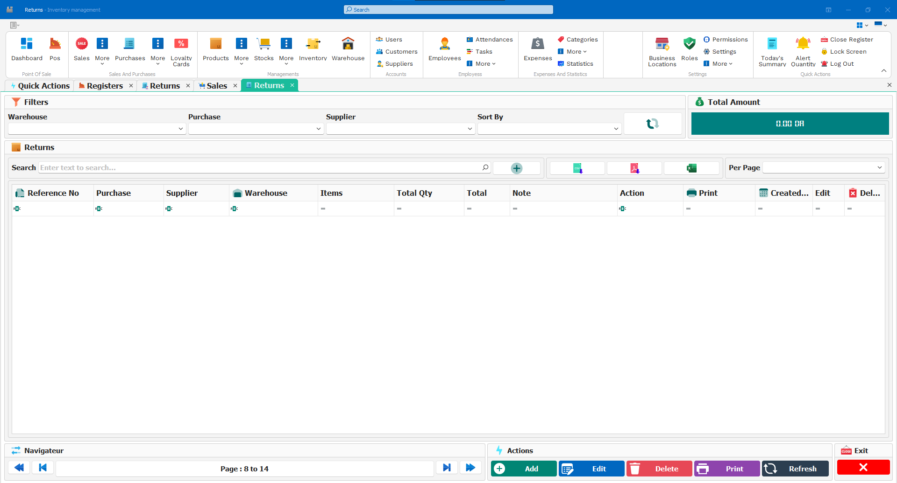
{kind=link}
Sales
Streamline the sales process to enhance customer experience and boost revenue.
Overview
The Sales module empowers businesses to efficiently process customer transactions, manage orders, and monitor sales performance to drive business growth.
Functionality:
- Create and manage sales orders with detailed product and customer information.
- Track order statuses, including "Pending," "In Process," and "Completed."
- Generate sales reports to analyze trends and performance.
Use Case Scenarios:
- Process customer purchases quickly and efficiently at the point of sale.
- Track order progress to ensure timely delivery or pickup.
- Analyze sales data to identify best-selling products and customer buying patterns.
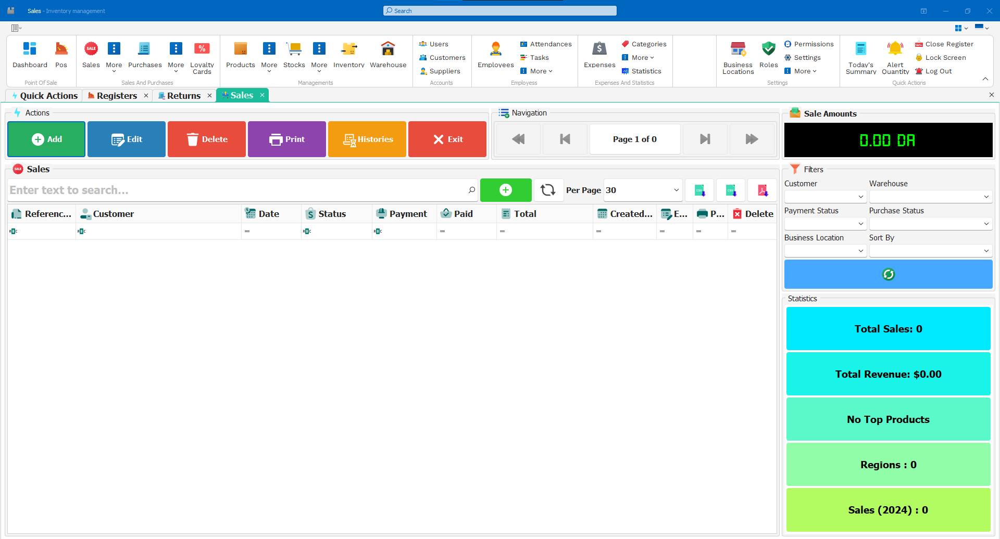
{kind=link}
Sales Returns
Manage and track returned products efficiently to maintain customer satisfaction and inventory accuracy.
Overview
The Sales Returns module helps businesses handle product returns from customers, ensuring proper refunds or replacements while keeping inventory and financial records up-to-date.
Functionality:
- Record and manage returns with reasons such as defects, wrong orders, or dissatisfaction.
- Track return statuses such as "Pending," "Processed," and "Completed."
- Integrate with inventory to adjust stock levels automatically.
Use Case Scenarios:
- Process returns for defective products with replacement or refund options.
- Handle customer returns due to incorrect orders and restock items accordingly.
- Analyze return trends to identify common product issues and improve quality control.
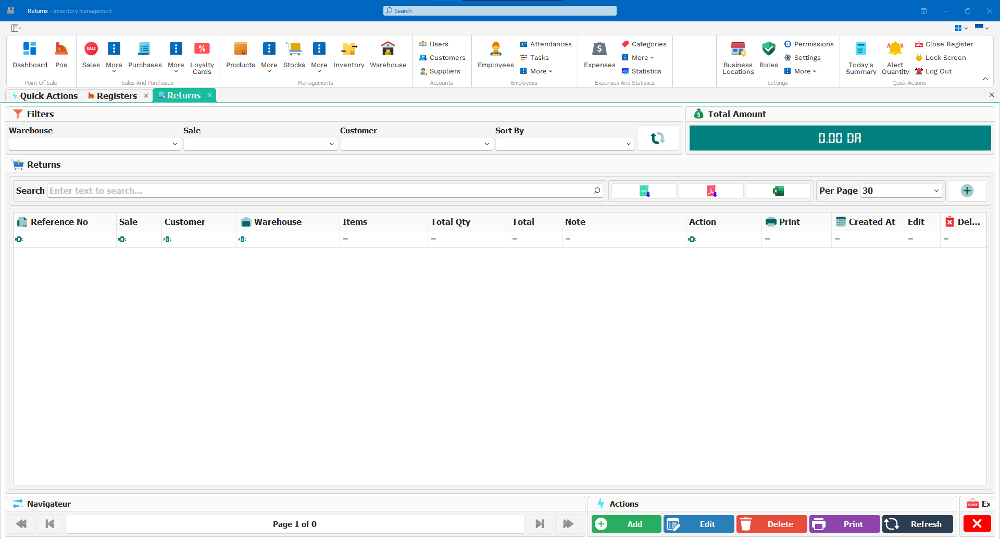
{kind=link}
Cash Registers
Manage cash flow and transactions seamlessly with an integrated cash register system.
Overview
The Cash Registers module helps businesses track and reconcile cash transactions, ensuring accurate record-keeping and reducing errors in daily cash flow management.
Functionality:
- Open and close cash registers with detailed logging of cash flow activities.
- Track daily cash transactions, including sales, refunds, and withdrawals.
- Generate cash flow reports to analyze transaction trends and discrepancies.
Use Case Scenarios:
- Track cash sales and monitor balances for each cash register in retail stores.
- Reconcile cash at the end of the day to ensure no discrepancies in transactions.
- Analyze cash flow trends to optimize cash management strategies.
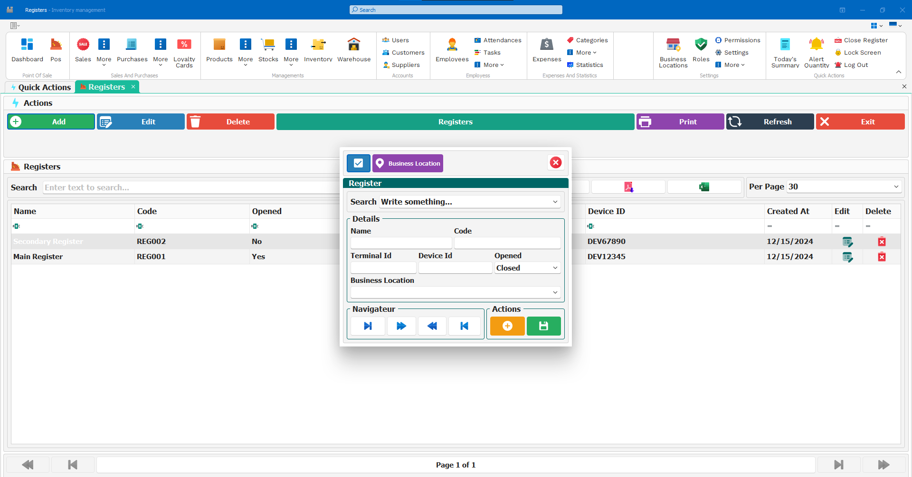
{kind=link}